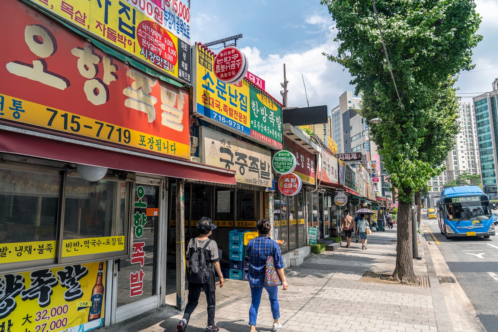
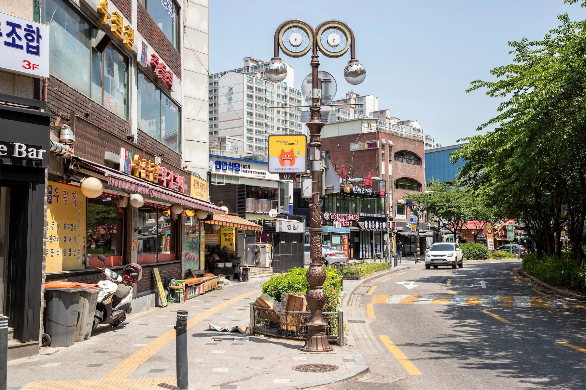
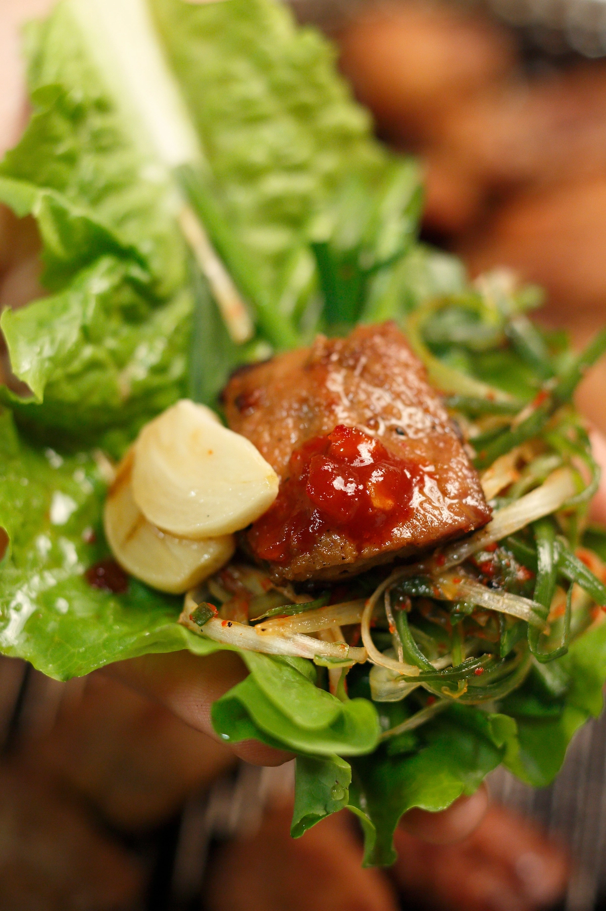
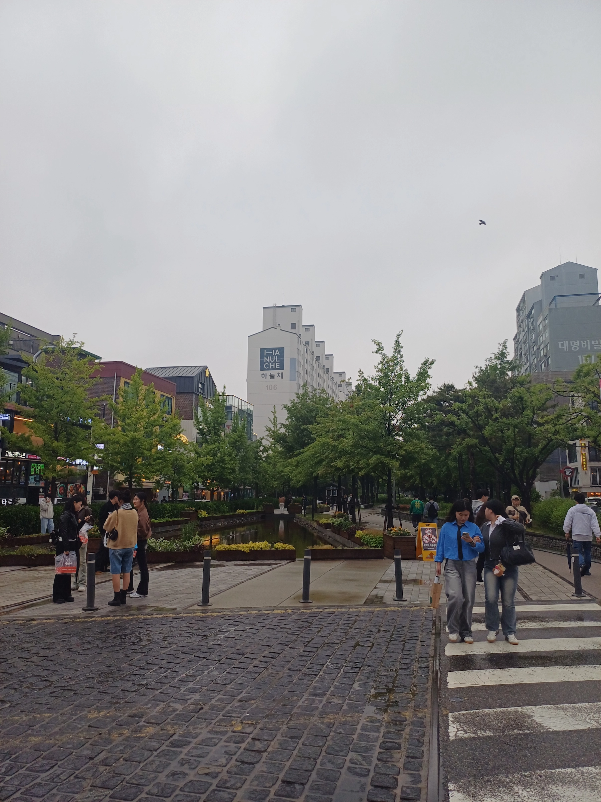

Gongdeok & Mapo Seoul Guide 2026: Food, Markets & Local Evenings

Photo: Korea Tourism Organization
Come for a local meal or a hands-on experience, then stay for an evening that feels very different from Seoul’s major tourist districts.
Gongdeok and the nearby Mapo food streets are not places you visit to work through a checklist of famous sights.
They make more sense when you have a reason to be here: eating your way through Gongdeok Market, trying an old-school Mapo dinner, joining a Korean food or dessert experience, or simply spending an evening somewhere built around everyday Seoul life rather than sightseeing.
That also means Gongdeok is not a mandatory stop. If you only have two or three days in Seoul and still have palaces, Myeongdong, Hongdae or other major areas on your list, you can skip it without feeling that you missed an essential landmark.
But if food is part of the trip, you have already booked an experience nearby, or you want to see a less tourist-oriented side of Seoul, Gongdeok and Mapo become much more interesting.
The point is not to see more sights. It is to connect a good local meal, something worth doing, and a relaxed Seoul evening without crossing the city between each one.
Why Gongdeok & Mapo Are Worth Discovering
Gongdeok Market gives the area an obvious starting point. Its jokbal and jeon alleys are not staged attractions created for visitors; they are part of a working food district where people come to eat, drink and meet after work.
A little farther toward Mapo Station and Yonggang-dong, the food changes rather than disappearing. Pork galbi, seolleongtang, naengmyeon and long-running neighborhood restaurants give this side of Seoul a different character from Hongdae’s youth culture or Myeongdong’s shopping streets.
What makes the area particularly useful for a traveler is that some Seoul experiences actually happen here. A market-food experience, a Korean dessert class or a wellness booking can bring you to Gongdeok before you ever thought of the neighborhood as somewhere to visit.
That is where this guide starts.
Instead of treating the activity as an isolated booking, Korea Inside connects it to the neighborhood around it: what to eat before or after, whether you need to pay for a guided experience at all, where to walk when dinner is over, and whether Gongdeok makes sense only for a few hours or as a place to stay.
Start at Gongdeok Market
If this is your first time in the area, Gongdeok Market is the easiest place to understand why people come here.
The market is best known for two food alleys: jokbal and jeon.
Jokbal is braised pig’s trotters, usually ordered as a large shared plate rather than an individual meal. It is a better fit for two or more people, especially if your group wants a substantial dinner with drinks.
Jeon is easier to sample. Instead of committing to one large dish, you can choose several kinds of pan-fried or battered food and build a mixed plate. The selection may include vegetables, meat, seafood and other ingredients depending on the stall.
For a traveler, that makes the two alleys useful in different ways.
Choose jokbal when dinner itself is the main event. Choose jeon when you want to taste several things, drink something with them and keep the evening moving.
Do not feel that you need to eat both just because they are next to each other. One proper market meal is enough before moving farther into Gongdeok or Mapo.
Do You Need a Food Experience Here?
Not necessarily.
If you are comfortable walking into a Korean market, pointing at food and working through a little language friction, Gongdeok Market is one of the places where exploring independently can be part of the experience.
A guided or bookable food experience becomes more useful when you want someone to explain what you are eating, help with ordering, or turn the market visit into a structured activity rather than simply dinner.
That difference matters.
You are not paying because the market is inaccessible without a guide. You are paying for context, communication and a more organized experience.
There are currently bookable experiences built around Gongdeok’s jeon alley and traditional Korean drinks. If that sounds more valuable to you than navigating the market alone, it can fit naturally at the beginning of the evening.
Eat Your Way Through Old-School Mapo
Gongdeok Market is the obvious place to start, but it is not the whole food story.
Move toward the Mapo Station and Yonggang-dong side of the area and the character changes from market food to older sit-down restaurants, pork galbi and dishes that have been part of this neighborhood for decades. Seoul’s own tourism material links the Yonggang food zone with the Gongdeok galmaegi and market area, so this is a real local food corridor rather than a Korea Inside invention.
The mistake would be trying to eat everything in one evening.
Pick the kind of meal you actually want, then build the rest of the evening around it.

Photo: Korea Tourism Organization / Lee Beom-su
If Pork Galbi Is the Reason You Came
Original Jobak House is a useful anchor for understanding Mapo’s pork-galbi identity. It has been operating since 1979 and is known for marinated pork ribs; its house drink, Chopaju, also connects the meal to the area’s makgeolli culture. It is near Mapo Station rather than inside Gongdeok Market.
Come here when you want the grilled-meat dinner itself to be the main experience.
If you have already eaten a full plate of jokbal or several rounds of jeon at Gongdeok Market, there is little reason to force another large meal just to say you tried Mapo galbi too.
A better plan is to choose market food or pork galbi as the main dinner, not both.

Photo: Korea Tourism Organization / Frame Studio
If You Want an Older Seoul Meal Without Barbecue
Mapo-ok gives the area a different kind of history. The restaurant has been associated with Mapo since 1949 and is known for seolleongtang, the milky ox-bone soup that is very different from a Korean barbecue dinner.
This can make more sense when you want a straightforward sit-down meal rather than an evening built around grilling meat and drinks.
It also shows why Mapo should not be reduced to “the pork-galbi neighborhood.” The older food culture here is broader than one dish.
Try Pyeongyang-Style Naengmyeon Only If You Actually Want It
Eulmildae is another long-running restaurant in this food zone, known for Pyeongyang-style naengmyeon.
This is exactly the kind of place that should not be presented as a universal must-eat. Even Visit Seoul notes that its mild noodle style is not for everyone.
If you already know you are curious about subtle, less aggressively seasoned Pyeongyang-style cold noodles, it is a meaningful stop.
If you are expecting sweet, spicy or strongly seasoned Korean noodles, choosing it only because it is famous may be the wrong dinner.
One Good Meal Is Enough
The strength of Gongdeok and Mapo is choice, not the number of restaurants you can complete.
A realistic evening might mean:
jeon and drinks at Gongdeok Market, or jokbal as the main dinner, or pork galbi near Mapo Station, or an older Seoul meal such as seolleongtang or naengmyeon.
Then do something else.
That “something else” is where Gongdeok becomes more interesting than a restaurant list: a drink, a hands-on class, a short walk, or another local experience can sit naturally between the food stops instead of turning the night into four consecutive meals.
Add an Experience Between the Meals
Gongdeok and Mapo work best when the evening is not just a sequence of restaurants.
A class, a short hands-on experience or a proper break can give the area more shape — especially if you arrived here because of an activity in the first place.
The useful question is not:
“What else can I book?”
It is:
“What fits naturally before or after the meal I already want?”
Make Korean Dessert Before Dinner
A Korean dessert class fits this area particularly well because it gives you a reason to arrive before the evening food rush rather than showing up only for dinner.
Current bookable classes around Gongdeok include traditional Korean dessert-making experiences conducted in English.
This is a better choice when you:
enjoy cooking or hands-on activities
want more interaction than a restaurant meal gives you
have a few hours rather than a rushed dinner window
want something indoors before moving into the market or Mapo food streets
It is less useful if food is already taking up most of your day.
A dessert class followed by jeon, jokbal and pork galbi can quickly become too much food rather than a better experience.
The cleaner combination is:
dessert class → walk → one proper local dinner
rather than treating the class as another item on a food checklist.
Taste Makgeolli Where It Is Brewed
If Korean traditional alcohol interests you, there is another experience that fits the Gongdeok–Mapo route without turning the evening into another full meal.
Chowol is an urban makgeolli brewery between Mapo Station and Gongdeok Station. You can stop in for a tasting, and reserved tasting experiences are also available.
This works better as a short stop before or after dinner than as another activity that takes over the whole evening.
Skip it if alcohol is not part of your trip. Check the current tasting options before building the rest of the evening around it.
Choose a Making Experience When Food Is Already Covered
Not every experience in Gongdeok needs to involve eating.
There are also small hands-on workshops in the area, including craft and soap-making experiences.
These make more sense when your dinner plan is already heavy.
For example:
workshop → short walk → pork galbi dinner
is usually a more balanced evening than:
cooking class → market tasting → barbecue dinner.
This kind of activity is also useful for couples, friends or families who want to do something together without committing the entire afternoon to a major attraction.
Do not book one simply because it appears nearby. The experience should earn the time it takes away from the food and walking you came here for.
Choose a Head Spa if You Want a K-Beauty Appointment
A head spa works differently from adding another food stop or a full-body massage. It makes more sense when K-beauty is already part of your Seoul plans and you want to use the Gongdeok stop for an appointment as well as dinner.
JUNO HAIR Mapo Harrington is close to Gongdeok Station, so it can fit before an evening meal without sending you across Seoul first.
Do not add it just to fill time. Hair and scalp treatments take a fixed appointment slot, so check the current program and duration before booking.
Use a Spa as the End of the Evening, Not the Main Attraction
Gongdeok and Mapo also have bookable massage and wellness options.
These can fit especially well at the end of a travel-heavy day because Gongdeok is easy to reach from several parts of Seoul and works naturally as a place to stop before returning to a hotel.
But a spa booking changes the character of the evening.
If you came specifically to explore the market and older food streets, booking a long treatment in the middle of dinner time can cut the neighborhood experience in half.
A better sequence is usually:
local dinner → short walk → spa or massage → return to hotel
rather than using the treatment as the centerpiece of the visit.
When a Spa Booking Makes Sense
Consider it when:
you have already spent most of the day sightseeing
you want a quieter ending than another bar or café
your hotel is easy to reach from Gongdeok afterward
the treatment itself is part of what you wanted to do in Seoul
Skip it when:
this is your only evening to explore Gongdeok and Mapo
you are already short on time
your priority is the market, food alleys or local nightlife
Choose a Simple Massage if Recovery Is the Priority
If you mainly want tired feet and legs dealt with after walking Seoul all day, you do not necessarily need the more elaborate spa option.
The HANOI Foot & Body SPA is close to Gongdeok Station and works better as a straightforward recovery stop when massage matters more than a premium spa setting.
Check the current treatment length before booking so it does not push dinner or the last train later than you intended.
Do Not Turn Gongdeok Into an Activity Checklist
The number of bookable experiences in this area can be misleading.
You do not need a market tour, dessert class, workshop and spa in the same visit.
For most travelers, one experience plus one good meal is enough to make Gongdeok and Mapo feel like a proper part of the trip.
That is also what makes this area different from a major attraction district.
You are not trying to complete it.
You are using it well.
Walk Off Dinner: Gyeongui Line Forest Park and a Local Evening
After a heavy market meal or pork galbi dinner, Gongdeok works better when you slow the pace down.
The Gyeongui Line Forest Park gives you that transition. Around Gongdeok, it is less about seeing a landmark and more about having somewhere to walk, talk and let dinner settle before deciding whether the night is over.
This is also where Gongdeok feels different from Hongdae.
Hongdae’s evening energy is built around shopping streets, busking, bars and crowds. Gongdeok is quieter and more functional. Office workers are finishing dinner, neighborhood cafés are still open, and the streets feel more like a place people actually use after work than a nightlife district designed around visitors.
That quieter rhythm is part of the reason to come here.

Do Not Expect a Major Nightlife District
Gongdeok is not a substitute for Hongdae, Itaewon or Euljiro if bars and late-night nightlife are the main purpose of your evening.
You can drink here, and the food streets naturally support an after-dinner drink, but the attraction is the meal and the local evening around it, not a long list of destination bars.
If you want a bigger night after dinner, Gongdeok’s transport connections make it easy to continue elsewhere.
If you are happy with a good meal, a walk and a quieter finish, there is no reason to leave just because the area is not famous for nightlife.
A Simple Evening Flow
A realistic first visit does not need many stops.
Option 1 — Market evening
Gongdeok Market → jeon or jokbal → drinks if you want them → short walk along the forest-park area → café or return to your hotel
Option 2 — Mapo dinner
Arrive around Mapo or Gongdeok → pork galbi, seolleongtang or another older neighborhood meal → walk toward the Gongdeok side → dessert, café or one small experience → finish the evening
Option 3 — Experience first
Dessert class or another booked activity → one proper dinner → short neighborhood walk → spa, café or hotel
The point is not the exact sequence.
It is to avoid crossing the area repeatedly because you tried to fit every food alley, restaurant and activity into one visit.
How Much Time Should You Give Gongdeok & Mapo?
For most travelers, a few hours or one evening is enough for a first visit.
You do not need to turn Gongdeok into a full sightseeing day.
Give it more time when:
food is one of the main reasons you travel
you have booked an experience here
you prefer neighborhoods to major attractions
this is not your first visit to Seoul
you are staying nearby
Keep it short when:
your Seoul itinerary is already crowded
you mainly want one specific restaurant or class
this is a short first trip and major sights still matter more to you
That is the advantage of Gongdeok and Mapo.
You can make the area a destination for the evening, or simply let one good meal or experience introduce you to it.
Should You Stay in Gongdeok?
Gongdeok can make more sense as a place to sleep than as a place to sightsee all day.
The reason is transport.
Gongdeok Station connects directly with the AREX and Seoul Subway Lines 5 and 6, making it useful for airport travel and for moving between western and central Seoul. Several hotels sit close to the station, so the area can work particularly well when you want reliable transport without sleeping in the middle of Hongdae or Myeongdong.
But good transport does not automatically make Gongdeok the right base for every trip.
Stay Here If Transport Matters More Than Being in the Middle of the Sights
Gongdeok is worth considering when you:
want straightforward access to Incheon Airport
expect to move between different parts of Seoul rather than stay in one district
like having local restaurants around the hotel
want a calmer evening than Hongdae
have already visited Seoul once and do not need major attractions outside the hotel door
are mixing business and sightseeing
For this traveler, Gongdeok can be a practical base that still gives you something to do when you return for dinner.
You are not coming back to an empty transport hub.
You are coming back to a neighborhood with markets, old restaurants and an after-work food culture.
Do Not Choose Gongdeok Just Because It Has the AREX
Airport convenience is useful, but it should not make the whole accommodation decision for you.
If this is your first trip to Seoul and you only have two or three sightseeing days, staying closer to the places you will visit every morning may save more time than staying near an airport rail line.
Gongdeok is also a weaker fit when:
you want late-night clubs and street energy outside the hotel
most of your itinerary is concentrated around Myeongdong, palaces and central sightseeing
you want a highly photogenic neighborhood to explore from the moment you step outside
you expect the hotel area itself to provide a full day of attractions
In those cases, Hongdae, Myeongdong or another district may fit the trip better.
Gongdeok works best when transport, food and a calmer base are advantages you will actually use.
What Matters When Choosing a Gongdeok Hotel
Do not stop at “near Gongdeok Station.”
For a hotel here, check:
which station exit you will actually use
whether your luggage route includes stairs or awkward crossings
how far the hotel entrance really is from the station
whether the AREX connection is convenient for your airport day
whether your room setup works for your group
late check-in and luggage-storage conditions
whether you want to be closer to Gongdeok Market or toward the Mapo side
The difference between two hotels that both advertise themselves as “near Gongdeok Station” can matter more when you are carrying a suitcase than when you are looking at a map.
Who Should Visit Gongdeok & Mapo — and Who Can Skip It
Gongdeok and Mapo are not the kind of Seoul neighborhoods that every first-time visitor needs to force into the itinerary.
Their value depends heavily on how you travel.
Go If Food Is Part of the Trip
Gongdeok and Mapo make the most sense when eating is not just a break between attractions.
Come here if you want to spend time choosing between a market meal, pork galbi, an older neighborhood restaurant or a hands-on food experience — and you are happy for the meal itself to be one of the main events of the evening.
This is one of the clearest reasons to make a separate trip to the area.
Go If You Want a More Local Seoul Evening
This area suits travelers who enjoy seeing how Seoul works outside its major sightseeing districts.
You will find commuters finishing work, neighborhood restaurants filling for dinner and streets that are active without feeling like a dedicated tourist zone.
That does not make Gongdeok “better” than Hongdae or Myeongdong.
It makes it useful when you want a different kind of evening.
Go If You Have Already Been to Seoul Once
Repeat visitors have more room to appreciate Gongdeok and Mapo.
If you have already seen the palaces, Myeongdong, Hongdae and the major central sights, an evening built around local food, a class or a neighborhood walk can add something genuinely different to the trip.
For this traveler, Gongdeok is easier to justify than it is on a packed first visit.
Good for Solo Travelers — With One Limitation
Solo travelers can enjoy the market, cafés, classes and walking portions of the area without much difficulty.
The main limitation is food.
Some dishes, especially large shared plates such as jokbal or Korean barbecue, are easier with two or more people.
If you are traveling alone, choose the restaurant carefully or use a class, market tasting or smaller meal to avoid ordering far more food than you need.
Good for Couples and Friends
This may be the easiest group for Gongdeok and Mapo.
A class, market stop, proper dinner and short walk can fill an evening without requiring a complicated itinerary.
The area also works well when the group wants food and conversation more than sightseeing or clubs.
Families Can Enjoy It — But Do Not Oversell the Evening
Families can use the market, cooking experiences and casual meals, but Gongdeok is not a major family-attraction district.
Young children may enjoy a short hands-on class or market visit more than a long restaurant crawl.
If Lotte World, museums or major family attractions are already taking most of the day, there is no reason to drag tired children across Seoul just to add Gongdeok at night.
Skip It on a Very Short First Trip
If you have only two or three days in Seoul, Gongdeok and Mapo should rarely displace the experiences you came to Korea specifically to see.
You can eat good Korean food elsewhere.
You can also find markets and cafés elsewhere.
The reason to come here is the combination: local food, practical experiences and a neighborhood evening with fewer famous sights competing for your attention.
That combination becomes more valuable when your itinerary has enough space for it.
Skip It If You Want Major Nightlife
If clubs, late-night bars, busking and street energy are what you want, Hongdae or Itaewon will usually make more sense.
Gongdeok has plenty of places to eat and drink, but it should not be presented as a hidden nightlife district.
Come here for the dinner and the local evening.
Go elsewhere if the night itself is the main attraction.
The Simple Decision
Choose Gongdeok & Mapo when you want:
local food + one worthwhile experience + a relaxed Seoul evening.
Skip it when you need:
major sights + big nightlife + a tightly packed first-trip itinerary.
That is the trade-off.
Gongdeok and Mapo are not trying to compete with Seoul’s famous districts.
They are valuable because they do something different.
A Half-Day and Evening Route in Gongdeok & Mapo
Gongdeok and Mapo work best when the day has one clear anchor.
That anchor might be a booked class, Gongdeok Market, or a proper Mapo dinner. Build around it instead of trying to visit every restaurant and activity mentioned in this guide.
If Food Is the Main Reason You Came
Arrive in Gongdeok in the late afternoon and start around the market before the evening gets too far along.
Look through the jeon and jokbal alleys first. Decide whether you want the market to be dinner or only the beginning of the evening.
If you choose jeon, keep the rest of the food plan light. A mixed plate and drinks can already become a full meal.
If you choose jokbal, treat it as dinner rather than an appetizer before another large restaurant.
After eating, walk toward the Gyeongui Line Forest Park area and slow the evening down. A café, dessert or short drink stop makes more sense than immediately looking for another famous restaurant.
If you still want to see the Mapo Station side, use the walk to understand the area rather than forcing in a second dinner.
If You Book an Experience First
A class gives the afternoon more structure.
Finish the activity, take a short break, then choose one dinner that feels different from the experience you just had.
After a dessert-making class, for example, pork galbi or a savory market dinner gives the evening a better balance than another sweets stop.
After a market-food experience, skip another food tour and use the remaining time for a walk, café or wellness booking.
The booking should start the neighborhood visit, not consume the whole reason for being there.
If Mapo Pork Galbi Is the Main Event
Start closer to the Mapo Station or Yonggang-dong side.
Give the barbecue dinner enough time rather than rushing through it to reach Gongdeok Market afterward.
Once dinner is finished, continue toward Gongdeok if you want a quieter walk, a café or a final drink.
This direction works particularly well when the meal itself is what brought you to the neighborhood.
Do Not Build the Route Around Distance Alone
Gongdeok and Mapo look compact enough on a map that it is tempting to keep adding stops.
That is not the useful way to plan the area.
Restaurants have waits. Classes have fixed start times. Korean barbecue is not a ten-minute meal. Market food can become heavier than expected.
A route with one experience, one proper meal and one lighter stop afterward will usually feel more complete than six saved locations that you rush between.
If something unexpectedly becomes the highlight of the evening, stay longer.
There is no important monument at the end of this route that you need to reach before closing time.
That flexibility is part of what makes Gongdeok and Mapo work.
The Korea Inside Default
For a first visit, the simplest version is:
one experience or Gongdeok Market → one proper local dinner → one walk or quiet evening stop.
Give it roughly half a day at most.
If you leave wanting to come back for the restaurants you skipped, the neighborhood has done its job.
Getting to Gongdeok & Mapo Without Overthinking It
Gongdeok and Mapo are easy to reach, but they are not the same station and they do not serve exactly the same purpose.
For most first-time visitors, Gongdeok Station is the easier starting point.
It connects with the AREX, Line 5, Line 6 and the Gyeongui-Jungang Line, which makes it one of the more useful transport hubs in western Seoul.
If your evening starts with Gongdeok Market, a class near the station, or you are arriving from Incheon Airport, start here.
Start at Gongdeok for the Market and Experiences
Gongdeok Station is the better starting point when you want:
Gongdeok Market
jokbal or jeon alleys
a class or booked experience nearby
an easy AREX connection
to begin on the quieter, more local side of the area
Do not arrive at Gongdeok and immediately rush toward Mapo Station just because both names appear in this guide.
There is enough to do around Gongdeok first.
Start at Mapo for Pork Galbi and Older Restaurants
Mapo Station makes more sense when your main reason for coming is the older restaurant zone around Mapo and Yonggang-dong.
If pork galbi or a specific long-running restaurant is the centerpiece of the evening, start closer to the meal rather than forcing the route to begin at Gongdeok.
Then walk or move toward Gongdeok afterward if the evening still has room.
From Incheon Airport
Gongdeok is particularly practical because the AREX all-stop train serves the station.
That makes the area useful in two situations:
you are staying nearby
you want to use Gongdeok as an easy first or last Seoul stop connected to the airport
But do not plan a food-heavy evening around arrival time if you are landing tired, delayed or carrying large luggage.
Airport access is an advantage, not a reason to turn arrival day into a complicated itinerary.
With Luggage
If you are coming directly from the airport or checking out of a hotel, deal with the luggage first.
Do not assume that being near Gongdeok Station means every route through the station is equally easy with a suitcase.
The exact exit, elevator access and final walk matter.
If you are staying nearby, leave the bag at the hotel before going to the market or a class.
If you are only passing through, check storage options before building an evening around the area.
Gongdeok and Mapo Work Better as a One-Way Evening
A simple route is usually easier than bouncing back and forth.
For example:
Gongdeok Station → market or booked experience → local dinner → walk toward Mapo or the forest-park side → finish the evening
or
Mapo Station → pork galbi or older neighborhood restaurant → walk toward Gongdeok → café, drink or quiet finish → Gongdeok Station for the ride home
Choose the direction from the thing that matters most.
The neighborhood does not need a complicated transport strategy.
Before You Go: Practical Mistakes to Avoid
Gongdeok and Mapo are easy to enjoy, but the area works better when you treat it like a real neighborhood evening, not a sightseeing checklist.
Do Not Order Every Famous Dish
Jokbal, jeon, pork galbi and other local specialties can all be substantial meals.
Trying to fit several of them into one evening usually creates more food than experience.
Choose one main meal and let everything else support it.
Check Portion Style Before Ordering
Some of the foods associated with this area are easier to share than to eat alone.
Solo travelers should look at portion size before committing to a large shared dish. A market tasting, smaller meal or class may fit better than ordering a full group-style dinner.
Do Not Assume Every Market Stall Works the Same Way
Ordering, payment and seating can vary between businesses.
Some places are straightforward for visitors; others may require more pointing, basic Korean or patience.
That friction is part of a working local market, not necessarily a problem to be “fixed.”
If you want explanations and ordering help, that is when a guided market experience becomes more useful.
Leave Space Around a Booked Experience
A cooking class, market experience or spa appointment has a fixed start time.
Do not schedule a long restaurant wait immediately before it.
Give yourself enough time to find the meeting point, especially if it is your first time navigating Gongdeok Station.
Do Not Treat Gongdeok and Mapo as the Same Station
They are close enough to combine, but they are separate starting points.
Begin near the part of the evening that matters most:
Gongdeok for the market and many nearby experiences. Mapo for the Yonggang-dong food side and pork-galbi dinner.
Then move in one direction instead of repeatedly going back and forth.
Airport Convenience Does Not Mean Arrival-Day Energy
The AREX connection makes Gongdeok useful for airport travel.
It does not mean a long market dinner, class and evening walk are automatically a good idea after a long flight.
If you arrive exhausted or with large luggage, check in first.
Save the neighborhood for a time when you can actually enjoy it.
Do Not Expect a Hidden Hongdae
Gongdeok is not valuable because it secretly has bigger nightlife or more attractions than famous districts.
Its strength is different:
local food, practical experiences and an evening that feels less organized around tourists.
If you arrive expecting shopping streets, busking and late-night club energy, you may simply have chosen the wrong neighborhood.
Before You Book Anything
For any class, food experience, spa or other activity, confirm the current:
meeting point
start time and duration
supported language
inclusions
minimum or maximum group conditions
cancellation rules
food or drink restrictions where relevant
Then fit the booking into the neighborhood rather than building the entire evening around the booking page.
A good Gongdeok evening should still make sense even after you close the affiliate tab.
Gongdeok & Mapo FAQ
Is Gongdeok worth visiting on a first trip to Seoul?
It can be, but it is not essential for every first-time visitor.
If your trip is short and you still want to see palaces, Myeongdong, Hongdae or other major areas, Gongdeok can wait.
It becomes much more worthwhile when food, local neighborhoods or a booked experience are already part of your trip.
What is Gongdeok best known for?
For travelers, the strongest reasons to know Gongdeok are its market food, jokbal and jeon alleys, nearby galmaegi and older Mapo food streets, practical transport connections and the growing number of hands-on experiences around the station.
It is not a major sightseeing district.
Should I visit Gongdeok Market or Mapo for dinner?
Choose Gongdeok Market when you want a more casual market-style evening built around foods such as jeon or jokbal.
Choose the Mapo and Yonggang-dong side when you want a sit-down meal such as pork galbi or one of the area’s older neighborhood restaurants.
You do not need both in the same evening.
Can I visit Gongdeok alone?
Yes.
Walking, cafés, classes and many market experiences are easy to do alone.
The main limitation is food: some famous dishes are designed for sharing and may be unnecessarily large for one person.
How long do I need in Gongdeok and Mapo?
For most visitors, a few hours or one evening is enough.
Add more time only if you have booked a class, want a slower food-focused visit or are staying in the area.
Is Gongdeok good for nightlife?
It is good for dinner and drinks, but it is not one of Seoul’s major nightlife districts.
If clubs, busking or late-night bar hopping are the main reason for your evening, Hongdae or Itaewon will usually fit better.
Is Gongdeok convenient from Incheon Airport?
Yes. Gongdeok Station is served by the AREX all-stop train.
That makes the area especially practical for travelers staying nearby or using it as a western Seoul transport base.
Airport convenience should still be balanced against where you plan to spend most of your sightseeing time.
Do I need to book a food tour or class?
No.
You can visit Gongdeok Market and eat around the area independently.
A paid experience becomes more useful when you want explanations, language help, a structured activity or a hands-on class rather than just a meal.
Is Gongdeok a good place to stay?
It can be a strong choice if you value AREX access, Lines 5 and 6, local restaurants and a calmer evening environment.
It is a weaker fit if you want major sights or nightlife immediately outside the hotel.
Final Recommendation
Gongdeok and Mapo are not areas you add to a Seoul itinerary because a guide told you there are ten famous things to see.
Come when the reason itself is clear.
Maybe you want to eat at Gongdeok Market.
Maybe Mapo pork galbi is the dinner you care about.
Maybe a Korean dessert class, food experience or wellness booking happens to bring you here.
Or maybe you simply want one evening that feels less like sightseeing and more like being in a neighborhood people use every day.
For a first visit, keep the plan simple:
one worthwhile experience or market stop → one good local meal → one relaxed finish.
That is enough.
If you enjoy the area, you will leave with a better reason to return than if you had tried to complete every restaurant and activity on a list.
Gongdeok and Mapo are not essential Seoul. They are the kind of Seoul you start appreciating once you stop trying to make every hour about a famous attraction.